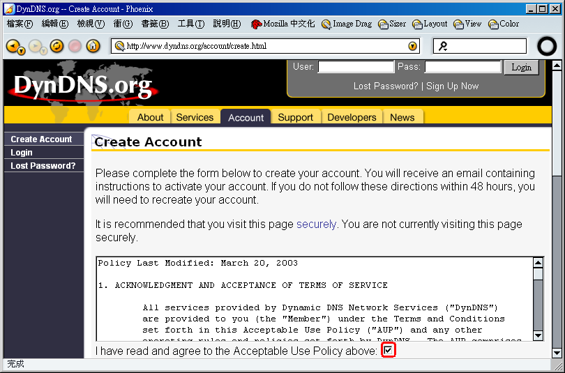
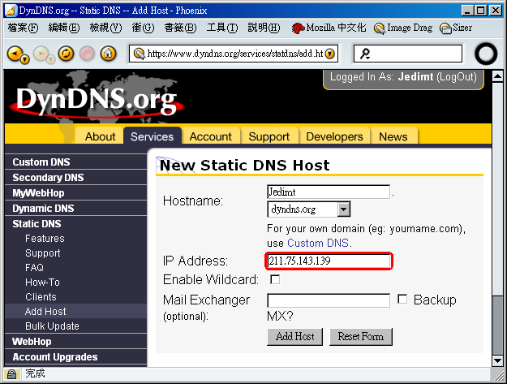
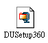

Movable Type 完全手冊：第零章 ─ 申請網域名稱
« 目錄
第零章 ─ 申請網域名稱
中國人向來講究名字；好的名字甚至能夠決定好的命運。在網路世界裡，這個道理一樣存在：任何好的網站，都該有個好的網域名稱。
舉例來說，如果妳的網站位於像是 http://www.thissinglewordisgoddamnreallylongandhardtoremember.net 或 http://www.there.is.so.many.words.in.this.url.com.tw 這麼冗長的網域名稱；甚至是居人籬下地用像 http://short.org/earth/asia/east/taiwan/taipei/public/site/ 這種網址名稱，恐怕實在是讓人難以記住。當然妳會說「有搜尋引擎和書籤這些東西可以用啊」，是沒錯，但是妳總會有機會需要當面告訴親朋好友妳的網站網址，或者是把它印在名片上；在這種情況下，要有效率地表達一堆聽起來很像的英文字母、數字、符號等，實在是相當具有挑戰性。別懷疑，妳需要一個簡短、好記、足以代表個人信仰/精神/思想/特色的網域名稱。
而這些也就是這一章所要教妳的。
如果妳覺得申請網域名稱毫無困難，或者妳早就有自己的網域名稱了的話，大可跳過本章。這些資訊向來就是寫給需要的人讀的，沒有理由花時間在妳早就知道的地方。
花錢購買網域名稱
假設妳是個有經驗的網路重度使用者，那麼沒有自己的網域名稱實在是很遜的一件事。或者，如果妳將建立的網站將代表著某間公司或某個組織團體的話，妳也應該要有自己的網域名稱 ─ 這樣纔能夠顯示出貴公司/組織的獨特性；否則豈不代表妳們跟本沒辦法自立自足？
許多台灣人或許會對 .tw 結尾的網域名稱有所執念；但是也許妳不知道，要買這樣的網域名稱實在是障礙重重。如果妳要申請的是 .org.tw 結尾的網域名稱的話，妳得先有一份內政部認可的人民團體證書；如果妳要申請 .com.tw 結尾的網域名稱的話，則得要持有營業執照纔行。 .net.tw 結尾的網域名稱需要先出示與網路業務相關的證明， .edu.tw 或 .gov.tw 則更非常人所能申請得到的。
妳真正容易申請到的，恐怕祇有 .idv.tw 結尾的網域名稱了。可是這個網域名稱，每年也會花去妳五百元到八百元新台幣左右。如果妳執意如此，可以到台灣網路資訊中心查詢該去哪裡申請。相形之下，若不執著於 .tw 結尾的網域名稱的話，事情就會簡單（而且便宜）得多。普遍說來，比較受好評的網域名稱註冊公司可能會是法國的 Gandi ，她們甚至提供了簡單的免費名稱伺服器服務供客戶使用；價格也很合理，一年祇需要 12 歐元（相當於台幣三百多），而起完全毋須任何額外的條件限制，就能夠親易地買到 .org 、 .com 、 .net 、 .info 、 .name 、 .biz 結尾的網域名稱。顯然比在台灣要方便得多了。
如果還想要更省錢的話，也可以到美國的 Go Daddy 購買網域名稱；如果妳一口氣買十年的話，每個網域名稱甚至花費不到 70 美元！不過 Go Daddy 提供的額外服務比較少，所以妳得自備名稱伺服器纔行。好消息是 PowerDNS 這家公司正好提供了免費的名稱伺服器功能，所以妳大可搭配起來一起用。
關於網域名稱的購買與設定其實有些冗長，在此我不打算贅述；如果妳對此毫無概念，又不想自己花時間摸索的話，我建議妳直接按照後面的小節，採用其他的解決方案。
圖一：從台灣網路資訊中心的頁面中，可以找到哪些地方能夠受理
.tw 結尾的網域名稱。
圖二：法國的 Gandi 公司，網域名稱的報價是每年 12 歐元。
圖三：美國的 Go Daddy 公司，網域名稱的報價是每十年 69.5 美元。
圖四： PowerDNS 提供了免費的名稱伺服器服務。
免費的網域名稱
如果妳目前還沒有任何的額外預算能夠支付網域名稱，或者單純地不會設定（也找不到人幫忙）的話，其實網路上也有許多免費的網域名稱可以用。當然相對地這些網域名稱會比較不那麼具有個人特色，但是畢竟妳一毛錢也沒付，不是嗎？
我們在此要介紹的是 DynDNS.org ，妳可以在此免費申請到像是 .ath.cx 、 .dnsalias.com 、 .dnsalias.net 、 .dnsalias.org 、 .dyndns.biz 、 .dyndns.info 、 .dyndns.org 、 .dyndns.tv 、 .dyndns.ws 、 .gotdns.com 、 .gotdns.org 、 .homedns.org 、 .homeftp.net 、 .homeftp.org 、 .homeip.net 、 .homelinux.com 、 .homelinux.net 、 .homelinux.org 、 .homeunix.com 、 .homeunix.net 、 .homeunix.org 、 .is-a-geek.com 、 .is-a-geek.net 、 .is-a-geek.org 、 .isa-geek.com 、 .isa-geek.net 、 .isa-geek.org 、 .kicks-ass.net 、 .kicks-ass.org 、 .merseine.nu 、 .mine.nu 、 .serveftp.net 、 .serveftp.org 、 .shacknet.nu 結尾的網域名稱；在這麼多網域名稱當中，最廣為人知、也最好記的應該就屬以 .dyndns.org 結尾的網域名稱了吧。 DynDNS 不但能夠提供免費的網域名稱，而且還能提供我們在後面纔會提到的動態 IP 對應的功能。更棒的是，妳甚至不需要被強迫放上廣告！
要在 DynDNS 申請免費的網域名稱的話，步驟大概像是這樣：
- 首先連到 DynDNS 的首頁 http://www.dyndns.org ，然後按下畫面右上方
Sign Up Now 的按鈕，如圖六。圖六：按下畫面右上方的
Sign Up Now 按鈕。
- 接下來在這個畫面中，請先閱讀相關的授權協議內容，然後勾選授權協議下方的
I have read and agree to the Acceptable Use Policy above: 核選框，如圖七。
圖七：閱讀授權協議內容，並勾選「我已讀過並同意上述條款」的核選框。
- 然後請把畫面往下捲動，在
Username 這一欄填寫妳將來要用來登入 DynDNS 的使用者名稱，如圖八。這一個名稱可以跟妳要用的網域名稱不同。圖八：填寫使用者名稱。在這個例子裡，我填的是
Jedimt 。
- 繼續在同一頁裡的
Email Address 欄位中，填寫妳的電子郵件地址，如圖九。妳得要填寫兩次，以確定沒有填錯。圖九：填寫電子郵件地址。妳得填寫兩次。在這個例子裡，我填的是
JediMT@Jedism.org 。
- 還是在同一頁，現在我們要在
Password 欄位填寫登入 DynDNS 會用到的密碼，如圖十。這個密碼至少需要有五個字元長纔行；同樣地，妳也得填寫兩次，以確認沒有打錯。圖十：填寫密碼。妳需要輸入兩次，而且密碼長度不得少於五個字元長。
- 最後在妳填完上面這些欄位之後，請按下
Create Account 的按鈕，如圖十一。會有像圖十二的畫面跑出來，告訴妳有一封認證信寄到妳的電子郵件信箱裡了，請妳在 48 小時內按照信件的指示操作，然後妳的 DynDNS 帳號纔會生效。圖十二：認證信已經寄出了；妳需要在 48 小時內按照信件內的指示操作，纔能開始使用 DynDNS 。
- 現在我們打開信箱，應該會有一封來自
support@dyndns.org 的信件，主旨為 Your Account Information 的認證信件，裡面會有一段「認證網址」，如圖十三裡用紅色框框標示出來的那樣。請把這個網址複製下來，然後用網頁瀏覽器加以開啟，如圖十四；妳會看到一個頁面，通知妳現在妳的 DynDNS 帳號已經正式啟用了。圖十三：來自 DynDNS 的認證信函裡，有一個認證網址。
- 帳號生效後，我們在 DynDNS 頁面上方的
User: 欄位填入步驟三指定的帳號名稱，然後在 Pass: 欄位填入步驟五指定的密碼，如圖十五；然後如圖十六按下 Login 按鈕。登入之後的畫面如圖十七所示。圖十五：填入 DynDNS 的帳號與密碼。在這個範例中，我們填的帳號就是
Jedimt 。
圖十六：然後按下「登入」按鈕。
圖十七：登入成功了，畫面上會出現妳的 DynDNS 帳號。
- 登入成功之後，請按下頁面上的
Services 標籤，如圖十八。
- 按下
Services 標籤後，接著如圖十九所示按下左方導覽列上的 Static DNS ；導覽列展開之後，再如圖二十所示按下 Add Host 。圖十九：按下左方導覽列的
Static DNS 。
- 接下來我們終於可以開始設定網域名稱了。如圖二十一所示，我們先在
Hostname: 的第一欄填入妳要用來當作網域名稱的字。舉例來說，如果妳想要用 Jedimt.dyndns.org 的話，就應該在這裡填入 Jedimt ；並且在第二欄的下拉式選單裡選擇 dyndns.org ，如圖二十二。圖二十一：在 Hostname 的第一欄填入
Jedimt 。
圖二十二：在 Hostname 的第二欄選擇
dyndns.org 。
- 接著如圖二十三，在
IP Address: 欄位裡，填入妳的網頁伺服器的 IP 地址，最後按下 Add Host 按鈕，如圖二十四，然後就會看到如圖二十五的畫面，告訴妳網域名稱已經設定完成了。妳應該把這個網域名稱記下來，在後面的章節裡，我們還會用到。
圖二十三：在
IP Address 欄位裡填入網頁伺服器的 IP 地址。
以上就是在 DynDNS 申請免費網域名稱的步驟。
浮動 IP 的解決方案
如果妳要用的網頁伺服器接的是 ADSL 或 Cable ，然後不幸地妳祇負擔得起浮動 IP 的價格話，將很難用一般的方法把站台公開出來 ─ 因為妳的 IP 可能時時都不同，教名稱伺服器要何所是從？這個時候，妳需要 DynDNS 來拯救妳。
前面的小節裡，我們提過 DynDNS 好處多多，其中最大的一個其實就是我們要在這一節裡用到的功能，也就是動態 IP 對應。整件事簡短地說來大略是這樣的：首先妳得在自己的電腦上安裝一個小程式，接著每次妳開機或改變 IP 之後，這個程式就會告訴 DynDNS 的名稱伺服器，讓它知道該把網域名稱對應到那個 IP 去；於是其他使用者祇要連到同一個網域名稱去，名稱伺服器自然會把她們帶到正確的地方。
現在就讓我們來看看該怎麼做。
- 首先妳得先在 DynDNS 裡註冊；如果妳已經有可用的 DynDNS 帳號的話，請跳過這個步驟，直接到步驟八去。要在 DynDNS 註冊，首先請連到 DynDNS 的首頁 http://www.dyndns.org ，然後按下畫面右上方
Sign Up Now 的按鈕，如圖二十六。圖二十六：按下畫面右上方的
Sign Up Now 按鈕。
- 接下來在這個畫面中，請先閱讀相關的授權協議內容，然後勾選授權協議下方的
I have read and agree to the Acceptable Use Policy above: 核選框，如圖二十七。圖二十七：閱讀授權協議內容，並勾選「我已讀過並同意上述條款」的核選框。
- 然後請把畫面往下捲動，在
Username 這一欄填寫妳將來要用來登入 DynDNS 的使用者名稱，如圖二十八。這一個名稱可以跟妳要用的網域名稱不同。圖二十八：填寫使用者名稱。在這個例子裡，我填的是
Jedimt 。
- 繼續在同一頁裡的
Email Address 欄位中，填寫妳的電子郵件地址，如圖二十九。妳得要填寫兩次，以確定沒有填錯。圖二十九：填寫電子郵件地址。妳得填寫兩次。在這個例子裡，我填的是
JediMT@Jedism.org 。
- 還是在同一頁，現在我們要在
Password 欄位填寫登入 DynDNS 會用到的密碼，如圖三十。這個密碼至少需要有五個字元長纔行；同樣地，妳也得填寫兩次，以確認沒有打錯。圖三十：填寫密碼。妳需要輸入兩次，而且密碼長度不得少於五個字元長。
- 最後在妳填完上面這些欄位之後，請按下
Create Account 的按鈕，如圖三十一。會有像圖三十二的畫面跑出來，告訴妳有一封認證信寄到妳的電子郵件信箱裡了，請妳在 48 小時內按照信件的指示操作，然後妳的 DynDNS 帳號纔會生效。圖三十二：認證信已經寄出了；妳需要在 48 小時內按照信件內的指示操作，纔能開始使用 DynDNS 。
- 現在我們打開信箱，應該會有一封來自
support@dyndns.org 的信件，主旨為 Your Account Information 的認證信件，裡面會有一段「認證網址」，如圖三十三裡用紅色框框標示出來的那樣。請把這個網址複製下來，然後用網頁瀏覽器加以開啟，如圖三十四；妳會看到一個頁面，通知妳現在妳的 DynDNS 帳號已經正式啟用了。圖三十三：來自 DynDNS 的認證信函裡，有一個認證網址。
圖三十四：連到認證信裡的認證網址後，帳號就生效了。
- 帳號生效後，我們在 DynDNS 頁面上方的
User: 欄位填入步驟三指定的帳號名稱，然後在 Pass: 欄位填入步驟五指定的密碼，如圖三十五；然後如圖三十六按下 Login 按鈕。登入之後的畫面如圖三十七所示。圖三十五：填入 DynDNS 的帳號與密碼。在這個範例中，我們填的帳號就是
Jedimt 。
圖三十七：登入成功了，畫面上會出現妳的 DynDNS 帳號。
- 登入成功之後，請按下頁面上的
Services 標籤，如圖三十八。
- 按下
Services 標籤後，接著如圖三十九所示按下左方導覽列上的 Dynamic DNS ；導覽列展開之後，再如圖四十所示按下 Add Host 。圖三十九：按下左方導覽列的
Dynamic DNS 。
- 接下來我們終於可以開始設定網域名稱了。如圖四十一所示，我們先在
Hostname: 的第一欄填入妳要用來當作網域名稱的字。舉例來說，如果妳想要用 Jedimt.dyndns.org 的話，就應該在這裡填入 Jedimt ；並且在第二欄的下拉式選單裡選擇 dyndns.org ，如圖四十二。至於 IP 位址則不用理會 ─ 因為我們等一下就會加以更新了。最後按下 Add Host 按鈕，如圖四十三，然後就會看到如圖四十四的畫面，告訴妳網域名稱已經設定完成了；妳應該把這個網域名稱記下來，我們稍後還會用到。圖四十一：在 Hostname 的第一欄填入
Jedimt 。
圖四十二：在 Hostname 的第二欄選擇
dyndns.org 。
- 現在按下左方導覽列上的
Clients ，如圖四十五。圖四十五：設定好網域名稱後，按下左方導覽列上的
Clients 。
- 接著會出現的畫面中，會列出所有平台可以用的用戶端程式。我們在此假設讀者使用的是 Windows 平台，所以顯然祇需要找 Windows 上可用的程式。因此，我們在畫面上的
Operating System: 下拉式選單中選擇 Win ，如圖四十六所示，然後再如圖四十七按下 Select 按鈕。圖四十六：從「作業系統」下拉式選單中選擇
Windows 。
- 接下來我們從這些 Windows 上可用的程式中，找到目前評價最高的
DirectUpdate ；請按下右方的磁碟片圖示，如圖四十八，就可以下載圖四十九裡的 DUSetup360.zip 。圖四十八：按下磁碟片圖示，下載
DirectUpdate ，並存放到妳要用來當作伺服器（也就是有用 ADSL 或 Cable 連線到 Internet ）的那一台機器上。

圖四十九： DUSetup360.zip 。
- 我們用 WinZip 來把這個壓縮檔解開。請參照圖五十到圖五十三，大致上祇要一直按「
下一步」就可以順利解開。
圖五十：請按「下一步」。
圖五十一：我們選擇『
從「DUSetup360.zip」解壓縮或安裝』，然後請按「下一步」。
- 一旦解開後，妳應該會看到一個像圖五十四這樣的資料夾，裡面有一個叫
DUSetup360 的可執行檔。請執行這個執行檔（用滑鼠雙擊），以安裝 DirectUpdate 。安裝的過程請參照圖五十五到圖六十二，大致上仍舊祇要一直按「 Next 」就可以安裝完了。圖五十四：解開壓縮檔後，會有一個叫
DUSetup360 的可執行檔。

圖五十五：安裝 DirectUpdate ，請按「
Next 」。

圖五十六：這一個畫面是釋出附註，請按「
Next 」。
圖五十七：這一個畫面是授權協議，要繼續安裝下去的話，妳祇得同意。所以請按「
Yes 」。
圖五十八：這一個畫面是用來變更安裝路徑的。我們採用預設值
C:\Program Files\DirectUpdate ，所以請直接按「
Next 」就可以了。
圖五十九：這一個畫面是用來決定要怎麼安裝的。我們選擇標準安裝，也就是
Typical ，然後請按「
Next 」。
圖六十：這一個畫面是用來決定要把捷徑放在那個資料夾裡的。我們採用預設值
DirectUpdate ，所以請直接按「
Next 」就可以了。
圖六十一：現在纔真正要開始安裝。請按下「
Next 」，然後就會開始複製檔案、修改登錄、安裝程式。
圖六十二：安裝完成，請按下「
Close 」來結束安裝程式。
- 如圖六十三所示，一旦安裝完成後，就會出現一個叫
DirectUpdate 的資料夾，裡面有一個叫 DirectUpdate 的捷徑，請用滑鼠雙擊 DIrectUpdate 。圖六十三：在
DirectUpdate 資料夾裡，有一個
DirectUpdate 的捷徑。
- 執行了
DirectUpdate 之後，妳會看到如圖六十四這樣的畫面；如果妳付錢註冊的話，就可以不要看這個畫面，否則每次執行 DirectUpdate 的時候，它都會跳出來煩妳。好，現在讓我們按下「 Close 」按鈕，把這個視窗關掉。圖六十四：
Direct Update 的未註冊提示訊息。請按「
Close 」按鈕來關掉這個視窗。
- 接下來妳會看到如圖六十五這樣的畫面，這時候請按「
Status 」標籤頁。圖六十五：在
Direct Update 的主畫面裡，按下「
Statue 」標籤頁。
- 在
Statue 這一頁裡，我們要設定先前在 DynDNS 申請設定的網域名稱。如圖六十六，請按下「 Create... 」按鈕。圖六十六：在
Statue 頁面中，按下「
Create... 」按鈕來新增一組網域名稱設定。
- 按下
Create... 按鈕後會跳出一個視窗，讓妳設定網域名稱組態。首先我們先按照圖六十七那樣，在 Account type: 這一欄的下拉式選單選擇「 dyndns.org (Dynamic) 」；接下來請如圖六十八那樣，在 Domain: 那一欄裡填寫妳在步驟 11 所建立的完整網域名稱；然後再如圖六十九與圖七十，在 User name: 那一欄填寫妳在 DynDNS 的帳號名稱（也就是妳在步驟三設定的那一個），並在 Password: 這一欄填寫妳的 DynDNS 帳號的密碼（也就是妳在步驟五設定的那一個）；然後再如圖七十一，按下「確定」按鈕。圖六十七：在
Account type: 這一欄的下拉式選單選擇「
dyndns.org (Dynamic) 」。
圖六十八：在
Domain: 填寫完整網域名稱；在這個範例中，我們填寫的是
Jedimt.dyndns.org 。
圖六十九：在
User name: 那一欄填寫妳的 DynDNS 帳號名稱；在這個範例中，我們填寫的是
Jedimt 。

圖七十：在
Password: 那一欄填寫妳的 DynDNS 帳號密碼。
- 設定完成後，妳應該可以看到如圖七十二這樣的畫面，告訴妳網域名稱已經對應到妳新的 IP 位址了。所以我們可以把這個程式關閉了，請按「
Exit 」按鈕。圖七十二：按下「
Exit 」按鈕來關閉
Direct Update 的管理程式。
- 然後如圖七十三的畫面又會冒出來煩妳，請按下「
Close 」來關閉視窗。圖七十三：
Direct Update 的未註冊提示畫面，請按下「
Close 」按鈕來關閉。
以上就是設定 DynDNS 動態網域名稱的方法。妳祇需要設定一次，以後不論是妳重新開機或 IP 有所變動的時候， Direct Update 這個程式就會自動地回報給 DynDNS ；當然還有許多不同的程式，也都有相同的效果，在此就不加以贅述了，請各位讀者自行秉持著前述步驟的精神加以嘗試。從此之後，妳祇需要把這個網域名稱（例如 Jedimt.dyndns.org ）公諸於世，別人就可以在任何時候連線到妳的機器上了（當然這也意味著妳的那一台機器得整天開機並連上網路）。同時我們在稍後的章節裡也會用到這個網域名稱。


版權所有 © 2003 Jedi. 保留部分權利。